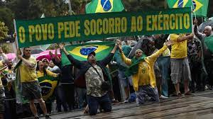

Boas maneiras!
O ex presidente Boze foi flagado comendo farofa!ele é do povão
Um grande medo compartilhado por mais de 50% da população brasileira atualmente se faz a implantação do comunismo no país. A pergunta a qual não quer calar: é possivel que tal temor vire realidade? a resposta obviamente é sim! uma vez que a "esquerdalha brasileira" como dizem muitos companheiros do lado right do trem patriota, cujos alguns dizem que os mesmos não sabem respeitar a divisa entre o trem e a plataforma, elegeram o presidente Luis Inacie Lule de Silve. um absurdo! porque querer igualdade? se esforçe que voce consegue! existe mesmo fome no Brasil? acabou de abrir um açougue na esquina! o COVID19 nunca existiu, ninguem morreu ou se infectou no meu condominio! Muitos afirmam que o brasil não sabe votar umva vez que elegeu um ladrão, "condenado a terceira instância" como muitos seguidores de jesus cria da plataforma teco tico afirmam.
| Comunismistas per capita | Capitalistas Per Capita | Meritocratas |
|---|---|---|
| 20 | 50 | 55 |
| 22 | 13 | 31 |
| 77 | 23 | 41 |
| total: 1235950 | ||
O viajante da linha amarela Fernando Holiday que durante um debate, afirmou que se a meritocracia pudesse fazer alguma coisa nos tempos da escravidão com o esforço dos negros, esta teria o feito. (OH MY GOD! QUE LÓGICA MY KINGO) Porem, para o mesmo ela não conseguiu realizar nada pois os escravos não possuiam estudos ou meios! Graduado e formado por Sociologia e Historia pela universidade Choquei Hittler&John Locke, possui dados e o estudo necessário para espalhar true news, igual ao seu papai adotive Bolsonare Messies. Ao lado uma músicaz linda e o encontro de Jair e Fernandio no plenário:
O grande atleta e inteligentissimo ex presidente Brasileiro, Jair fez grandes feitos pela nação principalmente com sua ótima gestão durante a pandemia. Comprou muito viagra, leite condensado e hidroxocloroquina, convenhamos meeu caro leitor, é tudo que um país precisa para combater um virus mortal que esteja ceifando vidas. Nunca roubou, nunca modificou leis para favorecer sua familia, um grande representante da familia tradicional brasileira.
Luiz Inácio Lula da Silva (nascido Luiz Inácio da Silva; Garanhuns,[nota 1] 27 de outubro de 1945), mais conhecido como Lula, é um ex-metalúrgico, ex-sindicalista e político brasileiro. Filiado ao Partido dos Trabalhadores (PT), é o 39.º presidente do Brasil desde 1.º de janeiro de 2023. Foi também o 35.º presidente da República, de 2003 a 2011. De origem pobre, migrou ainda criança de Pernambuco para São Paulo com sua família. Foi metalúrgico e sindicalista, época em que recebeu a alcunha "Lula", forma hipocorística de "Luís". Durante a ditadura militar, liderou grandes greves de operários no ABC Paulista e ajudou a fundar o PT em 1980, durante o processo de abertura política. Lula foi uma das principais lideranças do movimento Diretas Já, no período da redemocratização, quando iniciou sua carreira política. Elegeu-se em 1986 deputado federal pelo estado de São Paulo com votação recorde. Em 1989 concorreu pela primeira vez à presidência da República, perdendo no segundo turno para Fernando Collor de Mello. Foi candidato a presidente por outras duas vezes, em 1994 e em 1998, perdendo ambas as eleições no primeiro turno para Fernando Henrique Cardoso. Venceu a eleição presidencial de 2002, derrotando José Serra no segundo turno. Na eleição de 2006, foi reeleito ao superar Geraldo Alckmin no segundo turno.
Jair Messias Bolsonaro GOMM (Glicério,[nota 3] 21 de março de 1955) é um militar reformado e político brasileiro, atualmente filiado ao Partido Liberal (PL). Foi o 38.º presidente do Brasil, de 1.º de janeiro de 2019 a 1.º de janeiro de 2023, tendo sido eleito pelo Partido Social Liberal (PSL). Foi deputado federal pelo Rio de Janeiro entre 1991 e 2018. Nasceu no município de Glicério, mas passou a adolescência principalmente em Eldorado, no interior do estado de São Paulo. Começou sua carreira militar no município fluminense de Resende após formar-se na Academia Militar das Agulhas Negras em 1977. Posteriormente, serviu nos grupos de artilharia de campanha e paraquedismo do Exército Brasileiro. Tornou-se conhecido do público em 1986, quando escreveu um artigo para a revista Veja criticando os baixos salários dos militares, texto pelo qual foi preso e detido por quinze dias. Um ano depois, a mesma revista o acusou de planejar plantar bombas em unidades militares, o que ele negou. Após ser condenado em primeira instância, o Superior Tribunal Militar o absolveu dessa acusação em 1988. Transferiu-se para a reserva no mesmo ano com o posto de capitão e concorreu à Câmara Municipal do Rio de Janeiro, sendo eleito vereador como membro do Partido Democrata Cristão (PDC).
Letra Hine: Desejo a todas inimigues vide longue, para que elus vejam a cada die mais nosse vitorie, bateu de frente é so tiro porrade e bombe, aqui dois papes não se cria e nem se faz historie, acredito em Deus e faço elu de escude.
Você quer implantar o comunismo neste país?
o novo hine brasiliere recitado pelo presidente em sua posse:
O ex presidente Boze foi flagado comendo farofa!ele é do povão
Ajude a salvar a pátria através de um golpe militar!
Album de familia dos presidentes brasileiros: